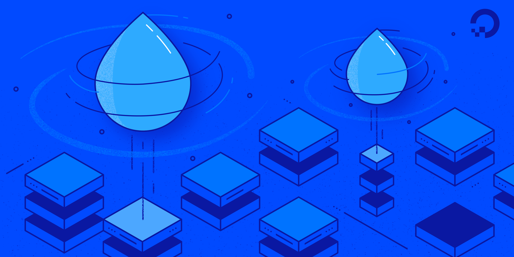
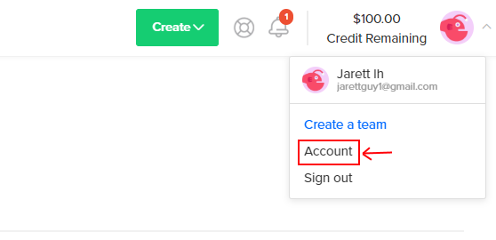

Digital Ocean Signup¶
In our first lab, you will learn how to interact with a headless (no monitor, only a terminal) Linux server. We will interact with Linux a lot in this class, as your Raspberry Pi will run only as a headless Linux server.
To dive into Linux servers, we will have you use DigitalOcean, a web hosting platform, to create a virtual machine. Please follow these instructions to sign up for DigitalOcean.
Warning
Please use our link to sign-up or you will not get any free credits!

In order to be able to complete week one's lab, you will need to complete the following steps before class
-
Make a new account in DigitalOcean: Sign-up Link
Please use our link to sign-up or you will not get any free credits!
You can sign up with Google or GitHub if you'd like, or create new credentials, it doesn't matter Note: Some students were having issues using their @uw.edu email, I would suggest using something else, like a gmail account. -
Confirm your DigitalOcean account by clicking the link you are emailed after signing up
-
Next, you'll be taken to a billing page for DigitalOcean. You will need to add a credit or debit card. Don't worry, we'll only be using free credits, you won't be charged on your card. As long as you close your virtual machine when we email you in a few weeks, you will be fine and spend nothing. Please don't use PayPal, because that requires you making an initial deposit of $5 in your account most the time.
!!! warning If you're asked to verify your identity Sometimes your account is flagged for possible fraudulent activity, and you may have to use a different credit card or provide ID. In this case, if you provide the requested information you should get your account unlocked within 24 hours.
- Next, you'll be taken to a page to create your first project. Skip this step by clicking your user icon in the top right of the screen and selecting 'Account'

- You should now see '$100.00 Credit Remaining' at the top-right of your window. If you do, you're good to go! During the first lab portion of class we will set up a server in DigitalOcean and introduce you to the tools that allow you to work remotely.